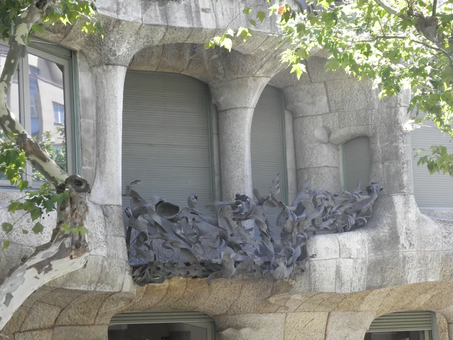
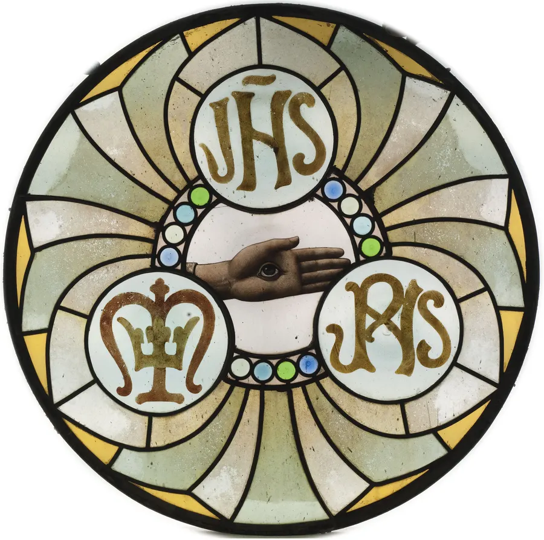
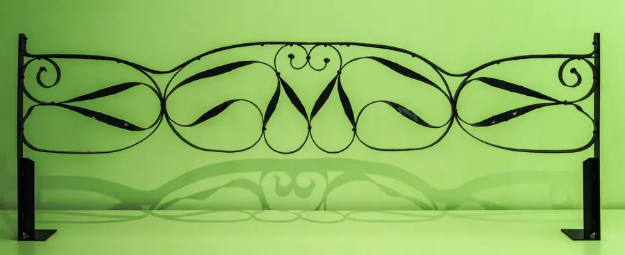

Totes les activitats de la web, a punt per imprimir
Aquest dossier recull totes les activitats «Posa-t'hi» de la web. Pots imprimir-lo sencer o només les pàgines que et demani el professor o la professora. Les activitats interactives (relacionar, ordenar, classificar) hi apareixen amb espais per respondre a mà.
Observa cada obra i decideix si és modernista. Fixa't en les formes, els materials i la decoració.
Obra A
Modernista No modernista
Obra B
Modernista No modernista
Obra C
Modernista No modernista
Obra D
Modernista No modernista
Obra E
Modernista No modernista
Obra F
Modernista No modernista
Obra G
Modernista No modernista
Obra H
Modernista No modernista
Per pensar i escriure
Tria una de les obres modernistes i explica, en tres o quatre frases, quins dos trets t'han ajudat a reconèixer-la. Fes servir almenys una paraula del glossari.
Relaciona cada causa amb la conseqüència que va tenir per al Modernisme.
Opcions: Alguns artistes pinten la pobresa i la marginació · Calien edificis nous en barris nous · Els artistes fan servir símbols com Sant Jordi o les quatre barres · Es construeixen els primers edificis modernistes a la Ciutadella · Hi havia clients amb diners per encarregar obres d'art
La indústria tèxtil enriqueix la burgesia.
S'enderroquen les muralles i es fa l'Eixample.
La Renaixença i el catalanisme reivindiquen la identitat catalana.
Barcelona organitza l'Exposició Universal de 1888.
Els obrers viuen en males condicions.
Debat a classe
El Modernisme el van pagar els fabricants, però el van fer possible també els obrers de les seves fàbriques i els artesans que el van construir. Qui creus que n'hauria de rebre el mèrit? Prepara dos arguments a favor de la teva opinió.
Llegeix cada situació i decideix a quin grup social correspon.
Té minyones i cuinera que viuen a casa.
Burgesia Classe obrera
Lloga una habitació del seu pis a un desconegut.
Burgesia Classe obrera
Encarrega una casa nova a un arquitecte famós.
Burgesia Classe obrera
Comença a treballar en un teler als onze anys.
Burgesia Classe obrera
Té una llotja al Gran Teatre del Liceu.
Burgesia Classe obrera
Fa vaga per treballar vuit hores al dia.
Burgesia Classe obrera
2. Fet o interpretació?
Un fet es pot comprovar amb documents. Una interpretació és una manera d'explicar els fets, i hi pot haver opinions diferents.
El 1900 una llei va prohibir treballar als menors de deu anys.
Fet Interpretació
Güell va fer la colònia per controlar els obrers.
Fet Interpretació
La Colònia Güell tenia escola i cooperativa.
Fet Interpretació
La teulada de la Casa Batlló és l'esquena d'un drac.
Fet Interpretació
El 1919 es va establir la jornada de vuit hores.
Fet Interpretació
Sense els obrers, el Modernisme hauria estat impossible.
Fet Interpretació
3. Un dia del 1905
Escriu un diari de dues pàgines: una noia de dotze anys que treballa en un vapor de Terrassa i una noia de la mateixa edat filla d'un fabricant. Què fan des que es lleven fins que se'n van a dormir? Fes servir almenys cinc dades d'aquesta pàgina.
4. Debat
«Les obres modernistes són patrimoni de tothom, també dels obrers que les van construir.» Hi estàs d'acord? Prepara dos arguments a favor i un en contra, i comenta-ho amb el teu grup.
Pintar els detalls amb grisalla i coure'ls al forn.
Soldar les juntes amb estany i col·locar el vitrall.
Tallar els vidres de colors seguint el cartó.
3. Com es fa un esgrafiat?
Ordena els passos numerant les caselles.
Cobrir la paret amb una capa de morter fosc.
Rascar l'estuc clar, encara humit, per descobrir el fons.
Traspassar el dibuix amb un estergit i pols de carbó.
Posar-hi al damunt una capa fina d'estuc clar.
4. De quin material és?
Tria el material principal.
Peça A
Vidre Ceràmica Ferro Pedra o maó

Peça B
Vidre Ceràmica Ferro Pedra o maó
Peça C
Vidre Ceràmica Ferro Pedra o maó
Peça D
Vidre Ceràmica Ferro Pedra o maó

Peça E
Vidre Ceràmica Ferro Pedra o maó
Peça F
Vidre Ceràmica Ferro Pedra o maó
Peça G
Vidre Ceràmica Ferro Pedra o maó

Peça H
Vidre Ceràmica Ferro Pedra o maó
5. Detectius de materials
Surt pel teu barri o pel centre de Terrassa i busca quatre materials diferents en edificis antics. Per a cada un, anota on és, fes-ne un dibuix o una foto i explica per què creus que el van triar. Pots imprimir la fitxa de camp.
Per pensar
Avui, molts d'aquests oficis gairebé han desaparegut. Per què creus que passa? Quins oficis artesans coneixes al teu entorn? Penses que caldria protegir-los? Argumenta-ho en cinc o sis línies.
Tria un objecte que facis servir cada dia (una ampolla, un llum, un estoig, un rellotge, un mòbil…) i redissenya'l com si fossis un artista de 1900.
Busca a la natura un model: una planta, un insecte, un animal o una onada.
Fes un primer esbós i converteix les línies rectes en corbes de colp de fuet.
Decideix de quins materials seria i quin ofici artesà el faria (consulta Oficis i materials).
Dibuixa'l en net, en color, i escriu-hi una fitxa: nom, materials, ofici i inspiració.
Explica a la classe en un minut per què el teu objecte és modernista.
Criteri
Excel·lent
Assolit
En procés
Inspiració en la natura
El model natural es reconeix i s'integra a la forma de l'objecte.
Hi ha un motiu natural, però només com a decoració.
No hi ha cap referència a la natura.
Línia i forma
Predominen les corbes i el conjunt és harmònic.
Hi ha corbes, però conviuen amb formes rígides.
Predominen les línies rectes.
Materials i ofici
Tria materials coherents i explica com es fabricaria.
Indica materials, però no l'ofici.
No indica materials.
Explicació oral
Usa vocabulari del glossari i argumenta.
Explica l'objecte amb claredat.
L'explicació és confusa o incompleta.
Per pensar
Avui la majoria d'objectes es fabriquen en sèrie i són iguals. Els modernistes en feien de bonics, però cars i fets a mà. És possible tenir objectes bonics, duradors i a l'abast de tothom? Posa'n un exemple.
Crea un cartell (en paper o amb Canva) per anunciar un producte o un esdeveniment del teu barri o de l'escola, amb l'estil dels cartellistes modernistes.
Tria què anuncies: la festa major, un concert, una botiga del barri, la jornada de portes obertes...
Escull la figura central: una persona, un animal o un objecte que es relacioni amb el que anuncies.
Limita els colors: 3 o 4 colors plans. Pensa en contrastos forts (groc i blau, vermell i verd).
Dibuixa les lletres: el títol ha de ser gran i formar part del dibuix.
Afegeix ornaments: flors, cabells o línies corbes que emmarquin la imatge.
Rúbrica d'avaluació
Criteri
Excel·lent (4)
Notable (3)
Suficient (2)
Cal millorar (1)
Trets modernistes
Hi ha colors plans, contorns marcats, ornament natural i lletres integrades.
Hi ha tres d'aquests trets.
Hi ha dos trets.
No es reconeix l'estil modernista.
Missatge
S'entén en menys de 5 segons què s'anuncia.
S'entén, però el text és una mica llarg.
Costa entendre què s'anuncia.
No se sap què s'anuncia.
Composició
Figura central clara i equilibri entre imatge i text.
Bon equilibri amb algun element sobrer.
La imatge o el text queden desequilibrats.
Elements desordenats.
Explicació oral
Explica amb vocabulari precís quins recursos ha fet servir i per què.
«Vaig néixer a Reus. Copiava la natura i vaig morir sense veure acabada la meva gran obra.»
Resposta:
«Vaig presidir la Mancomunitat i vaig dissenyar una casa amb sis torres punxegudes.»
Resposta:
«Vaig convertir les fàbriques de llana de Terrassa en obres d'art.»
Resposta:
«Vaig signar amb nom d'home després d'un escàndol als Jocs Florals.»
Resposta:
«Em vaig dibuixar en un tàndem i vaig retratar al carbó tots els meus amics.»
Resposta:
«Vaig estudiar a París i em vaig guanyar la vida pintant retrats quan gairebé cap dona ho podia fer.»
Resposta:
Investiga
Al Modernisme hi van treballar moltes dones: Lluïsa Vidal, Caterina Albert, la pintora Pepita Teixidor, artesanes, brodadores i decoradores que sovint no signaven. Tria'n una i prepara una fitxa com les d'aquesta pàgina. Per què creus que se'n parla menys?
Ordena-les de la més antiga a la més recent. Quan comprovis, apareixerà l'any en què va començar cada obra.
La Casa Botines de Lleó
El Palau Güell
La Casa Vicens
La cripta de la Colònia Güell
Els fanals de la plaça Reial
La Casa Batlló
2. De quin arquitecte és?
Relaciona cada obra amb el seu arquitecte.
Opcions: Antoni Gaudí · Josep Maria Jujol · Josep Puig i Cadafalch · Lluís Domènech i Montaner · Lluís Muncunill · Rafael Masó
Hospital de Sant Pau
Casa de les Punxes
El Capricho de Comillas
Masia Freixa
Gran Hotel de Palma
Torre de la Creu, a Sant Joan Despí
Farinera Teixidor, a Girona
Vapor Aymerich, Amat i Jover
3. Compara dues etapes
Obre la Casa Vicens (1883) i la Casa Milà (1906). Escriu tres diferències entre totes dues: formes, materials i relació amb la natura. Què creus que va aprendre Gaudí en aquests vint-i-tres anys?
4. Fes el teu arc catenari
Necessites una cadeneta o un collaret, un full gran i cinta adhesiva. Enganxa els dos extrems de la cadena a la part de dalt del full, deixa-la penjar i ressegueix-ne la forma amb llapis. Gira el full: ja tens un arc catenari. Al costat, dibuixa amb un compàs un arc de mig punt de la mateixa amplada.
Quin dels dos arcs és més alt? Quin és més punxegut?
Penja una goma d'esborrar a la cadena amb un clip. Com canvia la forma?
Explica amb les teves paraules per què un arc catenari no necessita contraforts.
5. Fitxa d'un arquitecte
Tria un dels arquitectes d'aquesta pàgina i fes una línia del temps de la seva vida amb cinc obres, una imatge de cadascuna i una frase que expliqui què té de nou respecte a l'anterior. Pots fer-la en paper o amb Canva.
13 · Itinerari modernista per Terrassa · terrassa.html
Posa-t'hi: reporters del Modernisme
Durant la sortida, en grups de tres:
Feu una foto de un detall de cada edifici (una rajola, una reixa, una volta, una lletra).
Al costat de cada foto, escriviu quin material és i quina forma de la natura imita, si n'imita alguna.
Tots junts, feu un mural (o una presentació a Canva) titulat El Modernisme amagat de Terrassa.
Repte final: busqueu pel vostre barri algun edifici amb detalls modernistes que no surti en aquest itinerari.
Organitzeu-vos en grups. Cada grup defensa una posició sobre aquesta pregunta: «Cal limitar el nombre de visitants als edificis modernistes més famosos?»
Repartiu els papers: veïns del barri, propietaris d'una botiga, turistes, responsables del monument i Ajuntament.
Cada grup escriu tres arguments i en busca una dada que els doni suport.
Debat de vint minuts amb torns de paraula d'un minut.
Al final, la classe redacta una proposta conjunta de cinc línies.
Abans i ara a Terrassa
Busca a l'Arxiu Municipal de Terrassa o a casa una fotografia antiga d'un edifici modernista de la ciutat. Fes-ne una foto actual des del mateix punt i escriu tres canvis i tres coses que es mantenen.
Autoavaluació final
Marca amb una creu com et veus en cada aprenentatge.
Aprenentatge
Ho sé fer sol o sola
Amb ajuda
Encara no
Sé explicar què és el Modernisme, quan i on es va desenvolupar.
Sé relacionar el Modernisme amb la industrialització, la burgesia i la Renaixença.
Reconec una obra modernista pels seus trets: natura, línia corba, color i materials.
Conec els principals arquitectes, artistes i escriptors, també les dones.
Sé explicar com treballaven almenys tres oficis artesans.
Identifico materials i tècniques: maó, ferro, vidre, ceràmica, trencadís, esgrafiat i volta catalana.
Conec el patrimoni modernista de Terrassa i el sé situar al mapa.
Argumento per què cal conservar el patrimoni i quins problemes té avui.